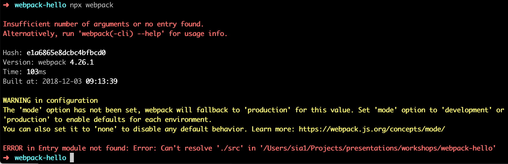

<!doctype html>
<html lang="en">
    <head>
        <meta charset="utf-8">
        <meta name="viewport" content="width=device-width, initial-scale=1.0, maximum-scale=1.0, user-scalable=no">

        <title>reveal-md</title>
        <link rel="stylesheet" href="./css/reveal.css">
        <link rel="stylesheet" href="./style.css" id="theme">
        <link rel="stylesheet" href="./css/highlight/github.css">
        <link rel="stylesheet" href="./css/print/paper.css" type="text/css" media="print">


    </head>
    <body>

        <div class="reveal">
            <div class="slides"><section ><section data-markdown><script type="text/template">

## Getting to Know Webpack 4

**Do now:**

1. Clone the repo: https://github.com/siakaramalegos/webpack-workshop
2. `cd webpack-workshop`
3. `npm install` now in case the internet is spotty later.
4. Pull all branches (each branch is a different exercise).

</script></section><section data-markdown><script type="text/template">

# Getting to Know Webpack 4
## Sia Karamalegos

</script></section><section data-markdown><script type="text/template">

# Hi, I'm Sia


</script></section><section data-markdown><script type="text/template">

# Webpack

Webpack is a static module bundler for modern JavaScript applications.

<aside class="notes"><p>It internally builds a dependency graph which maps every module your project needs and generates one or more bundles.</p>
</aside></script></section><section data-markdown><script type="text/template">

# Why Webpack?

<ul class="plus-minus">
  <li class="plus">Dependency management!</li>
  <li class="plus">Many features and options</li>
  <li class="plus">Hot reloading</li>
  <li class="minus">Configuration can be intimidating</li>
</ul>

<small>https://da-14.com/blog/gulp-vs-grunt-vs-webpack-comparison-build-tools-task-runners</small>

</script></section><section data-markdown><script type="text/template">

# New Defaults

Since version 4.0.0, webpack does not require a configuration file to bundle your project.

<aside class="notes"><p>Complex configurations have made Webpack a bit notorious, but now it comes with some defaults. Nevertheless, it is still fully configurable.</p>
</aside></script></section><section data-markdown><script type="text/template">

# Agenda

- Hello, Webpack!
- Entry and Output
- Loaders and Assets
- Plugins
- Transpiling ES2015 Using Babel
- Optimizations
</script></section></section><section ><section data-markdown><script type="text/template">
# Hello, Webpack!


</script></section><section data-markdown><script type="text/template">

## Before webpack: How would you install and use Lodash in a project?

<small>branch: `0-initial-state`</small>

<aside class="notes"><p>Explain branch 0... in following slides</p>
</aside></script></section><section data-markdown><script type="text/template">

```html
<head>
  <title>Life before webpack</title>
  <script src="https://unpkg.com/lodash@4.16.6">__SCRIPT_END__
</head>

<body>
  <script src="./src/index.js">__SCRIPT_END__
</body>
```

<small>branch: `0-initial-state`</small>

<aside class="notes"><p>We&#39;d call Lodash first, and then call our script which uses it - order matters!</p>
</aside></script></section><section data-markdown><script type="text/template">

## Getting started: Create a New Project

```bash
$ mkdir hello-webpack
$ cd hello-webpack
$ npm init -y
```

In `package.json`, delete the `main` entry, and add the private entry:

```javascript
"private": true,
```

<aside class="notes"><p>-y indicates create package.json without asking me any questions</p>
</aside></script></section><section data-markdown><script type="text/template">

## Install Webpack

Install Webpack and the Webpack CLI as development dependencies:

```bash
$ npm install --save-dev webpack webpack-cli
```


</script></section><section data-markdown><script type="text/template">

## What happens when we try to run webpack now?

```bash
$ npx webpack
```

<small>[Introducing npx: an npm package runner](https://medium.com/@maybekatz/introducing-npx-an-npm-package-runner-55f7d4bd282b) by Kat Marchán</small>

<aside class="notes"><p><code>npx</code> is fast/convenient way to invoke local binaries interactively. Options without <code>npx</code>: add to your scripts and pass arguments using --, shell tricks like alias <code>npmx=PATH=$(npm bin):$PATH</code>, or manually path to them with <code>./node_modules/.bin/mocha</code>. <code>npx</code> is the best solution: <code>$ npx mocha</code> is all you need to do to use your local installation.</p>
</aside></script></section><section data-markdown><script type="text/template">



<aside class="notes"><p>Can anyone tell me what the problem most likely is? We don&#39;t have an entry point. There isn&#39;t anything in our project for webpack to bundle! Before we do that, let&#39;s learn about modules...</p>
</aside></script></section><section data-markdown><script type="text/template">

> Good authors divide their books into chapters and sections; good programmers divide their programs into **modules**. - Preethi Kasireddy

<aside class="notes"><p>&quot;Like a book chapter, modules are just clusters of words (or code, as the case may be). Good modules, however, are highly self-contained with distinct functionality, allowing them to be shuffled, removed, or added as necessary, without disrupting the system as a whole.&quot; - Preethi</p>
</aside></script></section><section data-markdown><script type="text/template">

## ES6 Modules

- Modules are an ES2015 feature, but Webpack supports them out of the box and transpiles `import` and `export` so that older browsers can understand them.
- Check out [JavaScript Modules: A Beginner's Guide](https://medium.freecodecamp.org/javascript-modules-a-beginner-s-guide-783f7d7a5fcc) for a great intro.

** Webpack does not support any other ES2015 features out of the box. **

<aside class="notes"><p>We use Babel to transpile, but let&#39;s not get ahead of ourselves...</p>
</aside></script></section><section data-markdown><script type="text/template">

## Demo


<small>branch: `1-hello-webpack`</small>

<aside class="notes"><p>(1) Create index.js which uses <strong>import</strong> for lodash, (2), create /dist/index.html which deletes lodash and calls main.js, (3) run <code>npx webpack</code> - now dist has main.js with all our code plus lodash. <strong>What is the benefit here?</strong></p>
</aside></script></section><section data-markdown><script type="text/template">

## Your turn!

- Create a new project (or use the same one)
- Add Webpack and Lodash
- Use Webpack to bundle `/src/index.js` like the demo
- Confirm it works by opening `/dist/index.html`

```bash
$ mkdir hello-webpack
$ cd hello-webpack
$ npm init -y
$ npm install --save-dev webpack webpack-cli
$ npm install --save lodash
$ npx webpack
```

<small>Don't forget to delete the `main` entry in `package.json`.<br>branch: `1-hello-webpack`</small>
</script></section></section><section ><section data-markdown><script type="text/template">
# Key Concepts: Entry and Output


<aside class="notes"><p>What we did was cool, but a little limited - we still can&#39;t manage CSS or other file types except JS - now we are going to learn <strong>custom configurations</strong>.</p>
</aside></script></section><section data-markdown><script type="text/template">

## 4 Key Concepts in Webpack

- **Entry**
- **Output**
- Loaders
- Plugins

<aside class="notes"><p>Webpack configurations are based on four key concepts. Once you understand these, customizing a configuration becomes easier.</p>
</aside></script></section><section data-markdown><script type="text/template">

## Entry Point

- Indicates which module webpack should use to begin building out its internal dependency graph.
- Webpack figures out which other modules and libraries that entry point depends on (directly and indirectly).
- By default, it is `/src/index.js` but can be modified in the config with the `entry` property

```javascript
module.exports = {
  entry: './path/to/my/entry/file.js'
}
```

</script></section><section data-markdown><script type="text/template">

## Output

- Indicates where webpack should output the bundled files it generates.
- By default, it is `/dist/main.js` but can be modified in the config with the `output` property.
- To use `path`, import it at the top of the file `const path = require('path');`

```javascript
module.exports = {
  entry: './path/to/my/entry/file.js',
  output: {
    path: path.resolve(__dirname, 'dist'),
    filename: 'my-first-webpack.bundle.js'
  }
}
```

</script></section><section data-markdown><script type="text/template">

## Demo: Custom Config


<small>branch: `2-custom-config`</small>

<aside class="notes"><p>(1) Create webpack.config.js and add entry and output. Note changed output name to build. (2) Renamed /dist/ to /build/. (3) <code>npx webpack</code></p>
</aside></script></section><section data-markdown><script type="text/template">

## You Do: Custom Config

- Create a `webpack.config.js` file in the root of your project.
- Add `entry` and `output` properties to the config.
- If you want, change the name of your output directory.

```javascript
const path = require('path');

module.exports = {
  entry: './src/index.js',
  output: {
    filename: 'main.js',
    path: path.resolve(__dirname, 'dist')
  }
};
```

</script></section><section data-markdown><script type="text/template">

## You Do: Running Custom Config

- Create a new script in `package.json` to have Webpack use the new config file:
  ```javascript
    "scripts": {
      "build": "webpack --config webpack.config.js"
    },
  ```
- Run the build with `npm run build`, and open `index.html` to confirm it still works.

<aside class="notes"><p>If a webpack.config.js is present, the webpack command picks it up by default. We use the --config option here only to show that you can pass a config of any name. This will be useful for more complex configurations that need to be split into multiple files.</p>
</aside></script></section></section><section ><section data-markdown><script type="text/template">
# Loaders and Assets


</script></section><section data-markdown><script type="text/template">

## Loaders

- Out of the box, Webpack only understands JavaScript files.
- **Loaders** allow Webpack to understand, process, and bundle other files as well (CSS, images, fonts, etc).

*No need for a separate asset management system like Grunt or Gulp!*

</script></section><section data-markdown><script type="text/template">

## Loader Properties

Loaders go into the `module.rules` property of the configuration and have two properties:

- `test` - indicates which files should be transformed and is usually a regular expression
- `use` - indicates which loader to use to do the transforming

```javascript
module.exports = {
  output: {
    filename: 'my-first-webpack.bundle.js'
  },
  module: {
    rules: [
      { test: /\.txt$/, use: 'raw-loader' }
    ]
  }
};
```

<aside class="notes"><p>&quot;Hey webpack compiler, when you come across a path that resolves to a &#39;.txt&#39; file inside of a require()/import statement, use the raw-loader to transform it before you add it to the bundle.&quot;</p>
</aside></script></section><section data-markdown><script type="text/template">

## We Do: Add Style 💅

1. Install the loaders for CSS:
```bash
$ npm install --save-dev style-loader css-loader
```
2. Add the loader for CSS in our webpack config under `module.rules`:
```javascript
{
    test: /\.css$/,
    use: [
      'style-loader',
      'css-loader'
    ]
}
```
3. Create an `/src/style.css` file with some basic CSS.
4. Import your CSS file into your `/src/index.js` file. 🤯

<small>branch: `3-css-loader`</small>

<aside class="notes"><p>style-loader Adds CSS to the DOM by injecting a style tag. The css-loader interprets @import and url() like import/require() and will resolve them. How many of you use front end frameworks and components? This allows us to use separate css modules for each component.</p>
</aside></script></section><section data-markdown><script type="text/template">

## We Do: Add Images 📸

1. Install `file-loader` to handle images:
```bash
$ npm install --save-dev file-loader
```
2. Add the loader for images in our webpack config under `module.rules`:
```javascript
{
    test: /\.(png|svg|jpg|gif)$/,
    use: [
      'file-loader',
    ]
}
```
3. Add an image to your `/src/` folder.
4. Import your image file into your `/src/index.js` file and use it to create an `` tag.

<small>branch: `4-image-loader`</small>

<aside class="notes"><p>What does our build look like now (file name hashes)? Note that I did next step too in the same branch.</p>
</aside></script></section><section data-markdown><script type="text/template">

## We Do: CSS Images

Because we added `css-loader` before, our CSS can now interpret `@import` and `url()` and will resolve them to the correct file names in the build.

1. Add an image to use as a background to `/src/`
2. Add the CSS to apply your background image using `url()`

<small>branch: `4-image-loader`</small>

</script></section><section data-markdown><script type="text/template">

## Before We Move On

In real life, make sure you minify CSS and optimize image sizes. Lots of tools exist for automating these.

- [Loading and optimizing images](https://survivejs.com/webpack/loading/images/) on SurviveJS
- [image-webpack-loader](https://github.com/tcoopman/image-webpack-loader)
- [url-loader](https://webpack.js.org/loaders/url-loader/)
- [MiniCssExtractPlugin](https://webpack.js.org/plugins/mini-css-extract-plugin/#minimizing-for-production)
</script></section></section><section ><section data-markdown><script type="text/template">
# Plugins


</script></section><section data-markdown><script type="text/template">

## 4 Key Concepts in Webpack

<ul class="plus-minus">
  <li class="plus">Entry</li>
  <li class="plus">Output</li>
  <li class="plus">Loaders</li>
  <li class="arrow">**Plugins**</li>
</ul>

</script></section><section data-markdown><script type="text/template">

## Plugins

Plugins perform a wider range of tasks like:

- bundle optimization,
- asset management, and
- injection of environment variables.

</script></section><section data-markdown><script type="text/template">

## Using Plugins

1. Install the plugin using `npm`.
2. `require()` the plugin in your webpack config.
3. Add the plugin to the `plugins` array.
4. Create an instance of the plugin with `new`

```javascript
const HtmlWebpackPlugin = require('html-webpack-plugin'); //installed via npm
const webpack = require('webpack'); //to access built-in plugins

module.exports = {
  module: {
    rules: [
      { test: /\.txt$/, use: 'raw-loader' }
    ]
  },
  plugins: [
    new HtmlWebpackPlugin({template: './src/index.html'})
  ]
};
```

</script></section><section data-markdown><script type="text/template">

## Programmatically Create HTML Files

Let's use **HtmlWebpackPlugin** to create our HTML files.

This will generate HTML files that overwrite what is currently in our build folder.

</script></section><section data-markdown><script type="text/template">

## You Do: HtmlWebpackPlugin

1. `$ npm install --save-dev html-webpack-plugin`
2. Require and add to plugins with a title option:
  ```javascript
  const path = require('path');
  const HtmlWebpackPlugin = require('html-webpack-plugin')

  module.exports = {
    entry: './src/index.js',
    output: {
      filename: 'main.js',
      path: path.resolve(__dirname, 'build')
    },
    module: {
      //...
    },
    plugins: [
      new HtmlWebpackPlugin({title: 'Fun with Webpack'})
    ]
  };
  ```
3. Run your build and check out your new file.

<small>branch: `5-html-plugin`</small>

</script></section><section data-markdown><script type="text/template">

## You Do: Make Development Easier

- Add the production mode flag to the build script to remove the warning.
- Add a `webpack-dev-server` to run a server in memory and watch for changes.

```bash
$ npm install webpack-dev-server --save-dev
```

```javascript
// package.json
{
  //...
  "scripts": {
    "build": "webpack --mode production",
    "start": "webpack-dev-server --mode development",
  },
}
```

<small>We don't need to indicate the config file because Webpack will automatically include `webpack.config.js` if you include that file in your project</small>

<small>branch: `6-better-env`</small>

</script></section><section data-markdown><script type="text/template">

## You Do: Errors in Dev

We can clean up the server logs to show only errors and add an error overlay in the browser. Try out the following, run your dev server, and purposely break your code:

```javascript
// webpack.config.js
// ...
module.exports = {
  entry: './src/index.js',
  //...
  devServer: {
    stats: 'errors-only', // show only errors
    open: true, // auto open the page in browser
    overlay: true, // show errors in browser
  },
};
```

<small>branch: `6-better-env`</small>

</script></section><section data-markdown><script type="text/template">

## You Do: Clean Up Build Files

- Webpack generates files in the build folder, but it doesn't remove ones no longer used.
- `CleanWebpackPlugin` is a popular plugin to do this. Pass it the name of the folder to clean.

```bash
npm install --save-dev clean-webpack-plugin
```

```javascript
const path = require('path');
const HtmlWebpackPlugin = require('html-webpack-plugin')
const CleanWebpackPlugin = require('clean-webpack-plugin')

module.exports = {
  //...
  plugins: [
    new CleanWebpackPlugin(['build']),
    new HtmlWebpackPlugin({ title: 'Fun with Webpack' }),
  ]
};
```

<small>branch: `6-better-env`</small>
</script></section></section><section ><section data-markdown><script type="text/template">
# Transpiling ES2015 Using Babel


</script></section><section data-markdown><script type="text/template">

## Babel

- Webpack only supports modules out of the box, not any other ES2015 features.
- Babel transpiles ES2015 code down to ES5 for older browsers to understand.
- Luckily, Babel is easy to configure using Webpack!

<small>Note that you do not need Babel unless you use features not supported by your users' browsers.</small>

</script></section><section data-markdown><script type="text/template">

## You Do: babel-loader

1. Install `babel-loader` and its peer dependency `babel-core`.
2. Add a JavaScript loader to the webpack config to use `babel-loader`.
3. (Optional) If you need to use experimental features, or other Babel presets and plugins, create a `.babelrc` file. ([docs](https://babeljs.io/docs/en/next/configuration.html))

```bash
$ npm install babel-loader babel-core --save-dev
```

```javascript
module.exports = {
  //...
  module: {
    rules: [
      //...
      {
        test: /\.js$/,
        use: 'babel-loader'
      }
    ]
  },
};
```

<small>branch: `7-babel`</small>

<aside class="notes"><p>Go to docs to see if Guy Fieri is still there. Also talk through examples.</p>
</aside></script></section></section><section ><section data-markdown><script type="text/template">
# Optimizations


</script></section><section data-markdown><script type="text/template">

## What should you optimize?

- Be lazy! Only optimize what you need to.
- Several tools exist to analyze your webpack bundles - check out multiple options on [SurviveJS](https://survivejs.com/webpack/optimizing/build-analysis/)
- Let's try out `webpack-bundle-analyzer`

</script></section><section data-markdown><script type="text/template">

## You Do: webpack-bundle-analyzer

- Install the package, update the webpack config, and then run the production build.
- Usually you only optimize production as development could have extra things that aren't relevant to production.

```bash
$ npm install --save-dev webpack-bundle-analyzer
```

```javascript
const BundleAnalyzerPlugin = require('webpack-bundle-analyzer').BundleAnalyzerPlugin;

module.exports = {
  plugins: [
    new BundleAnalyzerPlugin({ analyzerMode: 'static' })
  ]
}
```

<small>branch: `8-optimizations`</small>

<aside class="notes"><p>What&#39;s the biggest thing in our bundle? Lodash! Do we need all of Lodash? No!</p>
</aside></script></section><section data-markdown><script type="text/template">

## Import Only What You Need

- Lodash is a great package because you can import individual functions rather than the entire package.
- Test out the following:

```javascript
// BAD - imports the whole package
import _ from 'lodash'

// BAD - imports the whole package
import { capitalize } from 'lodash'

// GOOD - imports only the function
import capitalize from 'lodash/capitalize'
```

<aside class="notes"><p>I usually comment out Bundle Analyzer when I&#39;m not using it.</p>
</aside></script></section></section><section  data-markdown><script type="text/template">
## Do you use Moment.js?

Try out `date-fns` instead! It's a function-based library like Lodash.

https://date-fns.org/
</script></section><section  data-markdown><script type="text/template">
# Keep Learning!

**Additional Resources**

- [Webpack official documentation](https://webpack.js.org/)
- [SurviveJS Webpack](https://survivejs.com/webpack/foreword/) by Juho Vepsäläinen - free online book with a detailed tutorial on learning Webpack (or purchase to support the author of the book and the author of Webpack)
</script></section><section  data-markdown><script type="text/template">
# Thanks! <span style="color:hotpink;">&#10084;</span>
</script></section></div>
        </div>

        <script src="./lib/js/head.min.js"></script>
        <script src="./js/reveal.js"></script>

        <script>
            function extend() {
              var target = {};
              for (var i = 0; i < arguments.length; i++) {
                var source = arguments[i];
                for (var key in source) {
                  if (source.hasOwnProperty(key)) {
                    target[key] = source[key];
                  }
                }
              }
              return target;
            }

            // Optional libraries used to extend on reveal.js
            var deps = [
              { src: './lib/js/classList.js', condition: function() { return !document.body.classList; } },
              { src: './plugin/markdown/marked.js', condition: function() { return !!document.querySelector('[data-markdown]'); } },
              { src: './plugin/markdown/markdown.js', condition: function() { return !!document.querySelector('[data-markdown]'); } },
              { src: './plugin/highlight/highlight.js', async: true, callback: function() { hljs.initHighlightingOnLoad(); } },
              { src: './plugin/zoom-js/zoom.js', async: true },
              { src: './plugin/notes/notes.js', async: true },
              { src: './plugin/math/math.js', async: true }
            ];

            // default options to init reveal.js
            var defaultOptions = {
              controls: true,
              progress: true,
              history: true,
              center: true,
              transition: 'default', // none/fade/slide/convex/concave/zoom
              dependencies: deps
            };

            // options from URL query string
            var queryOptions = Reveal.getQueryHash() || {};

            var options = {};
            options = extend(defaultOptions, options, queryOptions);
        </script>


        <script>
          Reveal.initialize(options);
        </script>
    </body>
</html>
